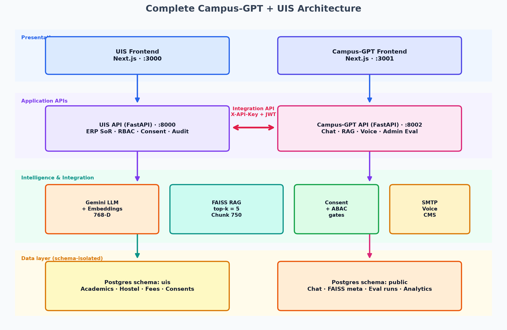
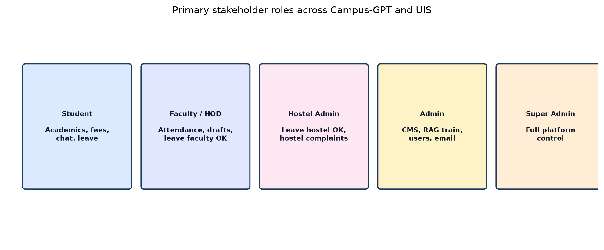
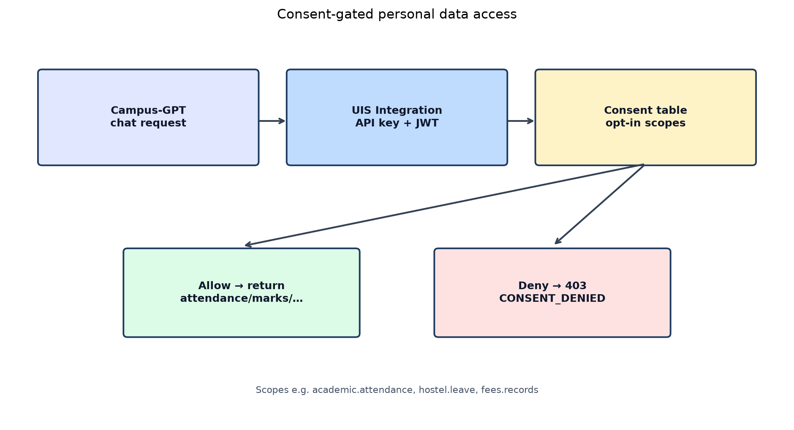
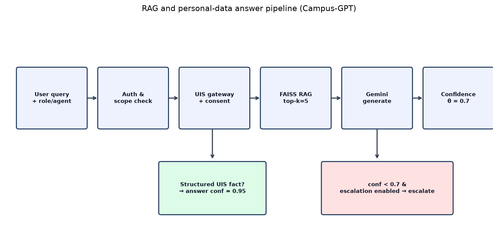
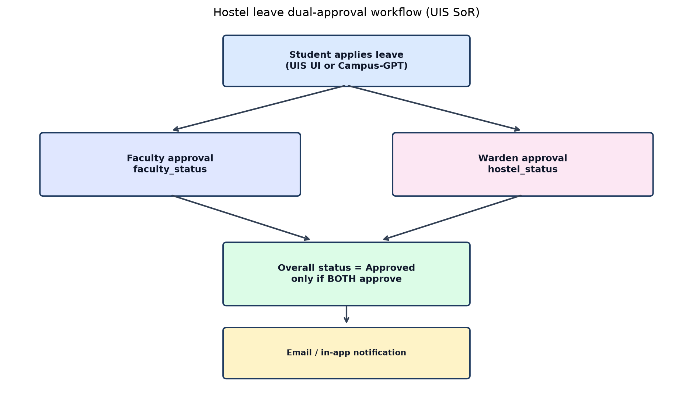

ieee_campus_gpt.tex on Overleaf.Keywords— Campus AI, RAG, UIS, consent, privacy, ABAC, multi-agent, Gemini, FAISS
Naive campus LLMs risk inventing personal numbers, over-retrieving without governance, or exposing ERP data. We present a general university framework demonstrated at KARE: UIS remains authoritative; Campus-GPT is a multi-agent assistant under consent and policy constraints. This paper describes a working prototype— not an experimentally proven superior system—and does not claim measured accuracy percentages.
Contributions: (1) dual UIS+AI architecture with schema isolation; (2) consent-gated personal data + RBAC + ownership ABAC; (3) multi-agent desks with scope guardrails; (4) policy-aligned workflows (e.g., dual-approval leave); (5) evaluation methodology without invented results.
RAG grounds knowledge-intensive generation [Lewis et al., 2020]. Higher-education GenAI work stresses privacy and adoption risks. Practical campus systems typically combine RBAC with resource ownership (partial ABAC), plus deny-by-default consent.

Demonstration ports: UIS 3000/8000, Campus-GPT 3001/8002. Campus-GPT never mounts the UIS DB.
Schemas: public (Campus-GPT) vs uis (UIS).


Consent scopes default to deny. Cross-student marks requests are rejected and audited as DENIED_ABAC.
Faculty class access asserts assigned offerings. ABAC here is a practical fragment, not a full policy engine.
KARE OAuth may restrict to klu.ac.in (limited case-study detail).

Agent selection changes persona, UI, session history, topic guardrails, and preferred actions—not the base LLM or FAISS index. Models: Gemini Flash; embeddings text-embedding-004 (768-D); FAISS top-k = 5.
Heuristic confidence (not accuracy): structured UIS ≈ 0.95; RAG with context ≈ 0.85; weak/no context ≈ 0.3; escalate if confidence < 0.7.

| Layer | UIS | Campus-GPT |
|---|---|---|
| UI | Next.js 14, React 18, Tailwind | Next.js 14, React 18, Tailwind |
| API | FastAPI | FastAPI + Gemini/FAISS |
| DB | Postgres schema uis | Postgres schema public |
The working prototype now instruments chat latency (latency_ms on each /api/chat)
and provides an admin gold-suite harness (POST /api/admin/eval/run / Evaluation UI) reporting
avg/min/max/median latency, keyword accuracy, token F1 vs references, and a retrieval keyword-hit@k proxy.
These automatic proxies are not human-rated accuracy or annotated Precision@K/Recall@K. Numbers must be taken from an executed run—not invented. Formal human evaluation remains future work. The prototype was also validated through functional and security scenarios (consent, ABAC, hostel scope, leave dual-approval).
Uncalibrated confidence; UIS dependency; optional voice vendors; demo seed data. Future: calibrated confidence, hybrid retrieval, multilingual support, stronger retention controls, public campus RAG eval set.
Campus-GPT is a working prototype of a policy-aware, privacy-preserving AI assistant for personalized university decision support. Formal accuracy, retrieval, and latency benchmarks remain essential next steps.